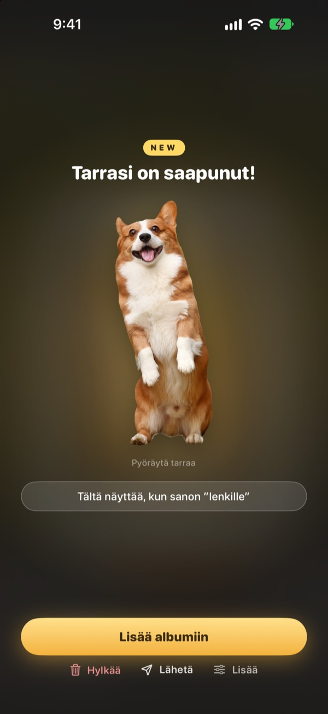
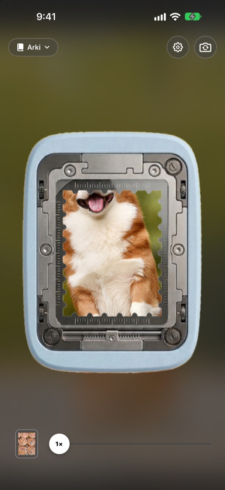
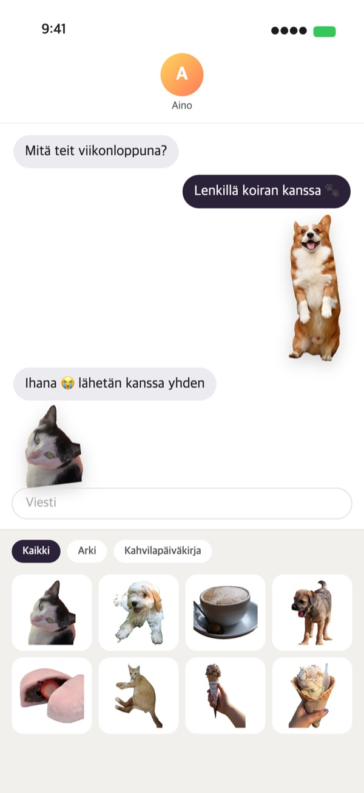
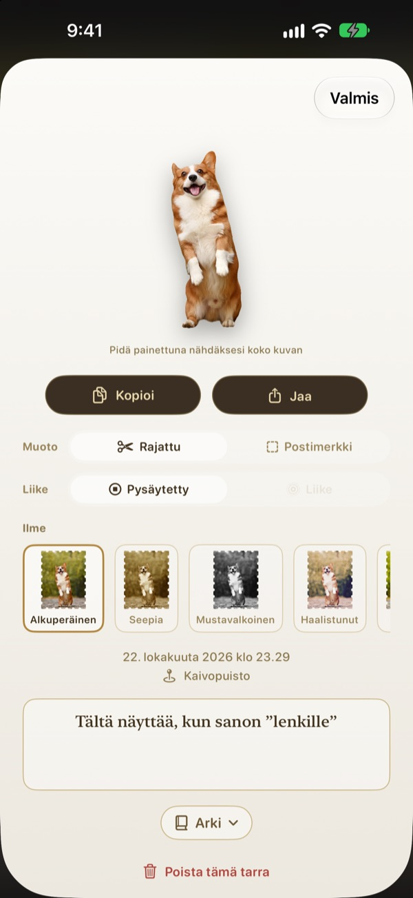
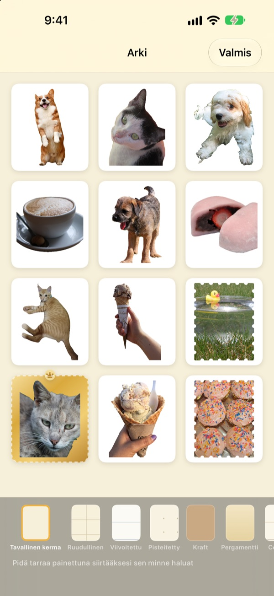

Pidä painettuna.
Hetkestä tulee tarra.
Sovita kuva lävistimen ikkunaan, pidä painettuna ja päästä irti. Koira rajautuu tarkasti omaa muotoaan myöten, ja mukaan tarttuu lyhyt liike juuri ennen painallusta ja sen jälkeen. Lähetä tarra saman tien Viesteistä tai näppäimistöltä.
Kaikki ominaisuudet ovat ilmaisia. Tarrat ja kuvat pysyvät laitteellasi.

Kokeile itse
Valitse kuva, pidä lävistinpainiketta painettuna ja päästä irti. Kokeile sitten toista muotoa ja ilmettä.
Parhaat hetket nukahtavat kuvakirjastoon
Nappaat kuvan juuri, kun koira näyttää kieltään. Jotta siitä tulisi tarra, pitää etsiä kuva, rajata se ja avata vielä erillinen tarra-appi. Sillä välin keskustelu on jo siirtynyt muihin aiheisiin. Punching irrottaa tarran siinä samassa, kun kuvaat, ja heti kun lisäät sen albumiin, se odottaa Viestien tarralaatikossa.
Kohde rajataan, maisemasta tulee postimerkki
Jos kuvassa on rajattavaa, kuten ihminen, lemmikki tai esine, saat juuri sen. Jos ei ole, kuten maisemassa, kuva irtoaa postimerkkinä, jossa on hammastettu reuna.
Mukaan tallentuu lyhyt liike painalluksen ympäriltä, joten tarra liikkuu.

Suoraan Viesteihin ja näppäimistölle
Irrotetut tarrat ilmestyvät Viestien tarralaatikkoon. Kun otat Punching-näppäimistön käyttöön, voit valita ja liittää niitä muissakin apeissa.
Liikkuva tarra liikkuu myös perillä. Kopioi tarra pitämällä sitä painettuna ja liitä se minne haluat.

Muoto ja ilme myös jälkikäteen
Vaihda rajatun ja postimerkin, liikkeen ja pysäytyskuvan välillä milloin haluat. Alkuperäinen kuva säilyy, joten jälki pysyy yhtä terävänä kuin ensimmäisellä kerralla, vaihdoit kuinka usein tahansa.
Valitse ilme vaihtoehdoista Alkuperäinen, Seepia, Mustavalkoinen, Haalistunut, Eloisa ja Syaani, ja lisää muutama sana, päivämäärä ja paikka.

Kokoa albumeihin, tulosta paperille
Tee jokaiselle aiheelle oma albumi, niin voit valita tarroja albumi kerrallaan myös Viesteissä ja näppäimistöllä. Valitse sivuiksi esimerkiksi kraft, ruudullinen, viivoitettu tai pergamentti ja järjestä tarrat mieleiseesi järjestykseen.
Muuta albumi tulostettavaksi PDF:ksi, jossa on postimerkin muotoiset leikkausviivat, ja tulosta se suoraan tarrapaperille.

Alkuun kolmessa vaiheessa
- 1
Tähtää
Aseta haluamasi kohde kameran keskellä olevaan ikkunaan.
- 2
Paina ja päästä irti
Tarra irtoaa sillä hetkellä, kun päästät irti.
- 3
Tallenna ja lähetä
Lisää tarra albumiin, niin se on heti valmiina Viesteissä ja näppäimistöllä.
Missä tarroja käytetään ja mistä asetuksia muutetaan
- Viestit
- ＋ kirjoituskentän vieressä ▸ Tarrat ▸ Punching-tarrat
- Muut apit
- Ota Punching-näppäimistö käyttöön, vaihda siihen maapallonäppäimellä, valitse ja liitä
- Missä vain
- Pidä tarraa painettuna, kopioi ja liitä
- Paperitarrat
- Albumin ⋯ ▸ Käyttö ▸ Tulostettava tarra-arkki (PDF)
- Sivut ja järjestys
- Albumin ⋯ ▸ Koristele vapaasti
- Vanhemmat kuvat
- Albumin Tuo Kuvista
- Ensimmäinen muoto
- Asetukset ▸ Irrotus ▸ Oletusmuoto
- Liikkeen toisto
- Asetukset ▸ Näkymä ▸ Toista liike automaattisesti
- Pikakäynnistys
- Avaa Punching-kamera Pikakomennoista tai Ohjauskeskuksesta
Asetukset avautuvat kameranäkymän oikean yläkulman rataspainikkeesta.
Usein kysyttyä
Tarra ei liiku.
Avaa kameran oikeasta yläkulmasta Asetukset ▸ Näkymä ja tarkista, että Toista liike automaattisesti on päällä. Napauta sitten tarraa ja tarkista, että Liike on päällä kohdassa Muoto. Liike tallentuu aina mukaan, joten voit ottaa sen käyttöön milloin vain. Kuvat-apista tuodut kuvat ovat yksittäisiä kuvia, joten ne eivät liiku.
Sain postimerkin enkä rajattua tarraa.
Kuvat, joissa ei ole rajattavaa kohdetta, kuten maisemat, irtoavat automaattisesti postimerkkinä. Voit vaihtaa muodon milloin tahansa napauttamalla tarraa ja valitsemalla Muoto. Jos haluat postimerkkejä alusta asti, vaihda Asetukset ▸ Irrotus ▸ Oletusmuoto.
En näe tarroja Viesteissä.
Napauta Viesteissä kirjoituskentän vieressä olevaa ＋-painiketta ▸ Tarrat ja etsi Punching-tarrat. Ne ilmestyvät, kun olet irrottanut Punchingissa vähintään yhden tarran, ja jos albumeita on useampi, voit selata niitä albumi kerrallaan. Tarkemmat ohjeet löytyvät kohdasta Asetukset ▸ Käyttö ▸ Käyttö Viesteissä ja näppäimistöllä.
Miten otan näppäimistön käyttöön?
Napauta kohdassa Asetukset ▸ Käyttö ▸ Käyttö Viesteissä ja näppäimistöllä painiketta Avaa Asetukset ja ota käyttöön Näppäimistöt ▸ Punching-tarrat. Tarrojen liittäminen vaatii Salli täysi pääsy -asetuksen, mutta näppäimistö ei koskaan lue eikä lähetä kirjoittamaasi eikä muodosta yhteyttä internetiin. Napauta sen jälkeen missä tahansa apissa maapallonäppäintä ja vaihda Punching-tarroihin.
Voinko tulostaa oikeita tarroja?
Napauta albumin oikeasta yläkulmasta ⋯ ▸ Käyttö ▸ Tulostettava tarra-arkki (PDF). Koko albumista syntyy 300 dpi:n tulostettava PDF, jossa on postimerkin muotoiset leikkausviivat, valmiina tarrapaperille kotitulostimessa tai painossa. Saman valikon Tulostusopas neuvoo vaihe vaiheelta.
Minne vanhat kokoelmani katosivat?
Versiosta 1.0.1 lähtien tarrat ryhmitellään vain yhdellä tavalla: albumeihin. Jokaisesta kokoelmasta tuli samanniminen albumi, ja sen tarrat, sivut ja järjestys siirtyivät mukana sellaisinaan.
Tilapalkissa palaa vihreä valo.
Se on iOS:n kameran merkkivalo. Se palaa vain, kun kameranäkymä on auki. Kun avaat albumin, kamera pysähtyy ja valo sammuu.
Mitä tapahtuu, kun poistan tarran?
Tarra, alkuperäinen kuva ja liiketiedot poistetaan laitteeltasi pysyvästi, ja tarra katoaa myös Viestien tarralaatikosta. Poistoa ei voi perua, joten harkitse ennen poistamista.
Mihin kuvani ja tarrani tallentuvat?
Vain laitteellesi. Ei tiliä, ei omaa palvelinta eikä mainoksia. Laitteelta lähtevät vain nimettömät käyttötilastot, virheraportit ja itse lähettämäsi palaute. Lisätietoja on tietosuojaselosteessa.
Onko se oikeasti ilmainen?
Kyllä, kaikki ominaisuudet ovat ilmaisia. Jos pidät apista, voit antaa kehittäjälle tippiä apin sisällä, mutta tippi ei avaa mitään lisäominaisuuksia.
Kysyttävää tai palautetta? Kirjoita osoitteeseen leeo@kakao.com. Vastaamme yleensä 2–3 päivässä. Virheistä ja toiveista voi kertoa myös GitHubissa: M1zz/StampCamera.